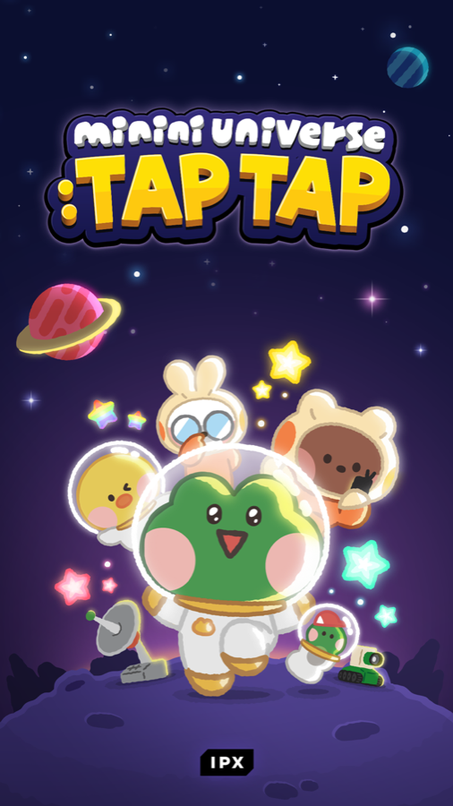
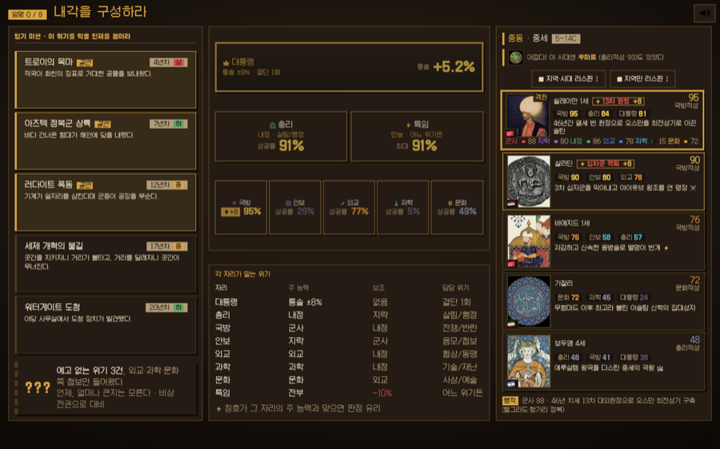
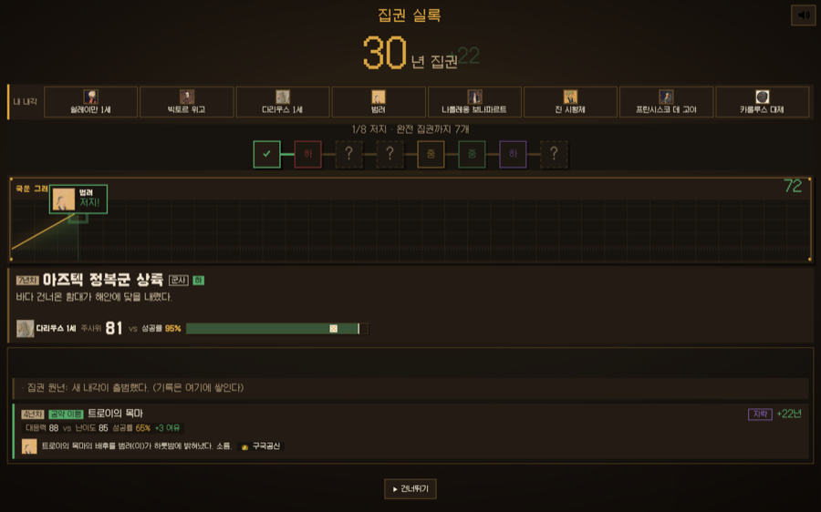
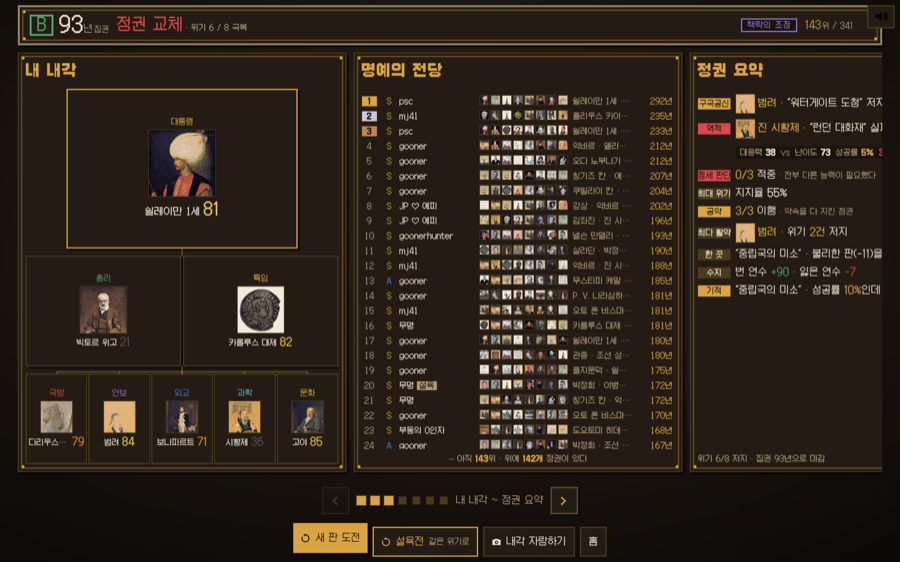
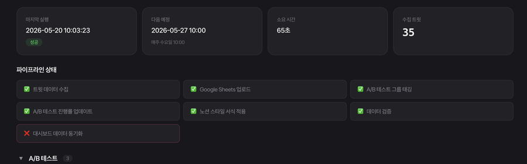

무엇을 측정할지 직접 정하고, 도구는 AI로 제작합니다.
eastboy_12@naver.com
한 캠페인에서 시작해 단일 매출 46억 프로젝트까지 이끌었습니다.
쓸 도구가 없으면 직접 만듭니다. 봇, 대시보드, 인트라넷, 웹게임까지 혼자 완주했습니다.
KOL 300명, 에이전시 3사, 프리랜서 스태프 12명. 이 규모를 혼자 운영했습니다.
다회차(14회)에 나눠 돌리며, 매 회차 어떤 KOL이 실제 참여를 만들었는지 보고 다음 회차의 대상과 보상을 다시 짰습니다. 한 번에 터뜨리는 대신 매번 배우는 방식입니다.
해킹, 상장폐지 등 9건 이상의 상황에서 전 채널 메시지를 하나로 유지했습니다. X 5개 계정 30만, 디스코드 6만, 텔레그램 8만을 직접 운영했습니다.
KBW 사이드 행사를 3년 연속 직접 기획했습니다. 행사로 끝내지 않고 참여자 데이터를 받아 다음 캠페인으로 넘겼습니다.
다섯 권역은 채널과 언어가 다릅니다. 300명 이상을 규모별로 나눠 접근을 달리했고, 에이전시 3사는 직접 골라 운영했습니다.
| 프로젝트 | 분류 | 요약 |
|---|---|---|
| 런칭 경매 캠페인 | Marketing | 비공개 경매로 가격을 먼저 세워 단일 매출 46억 |
| 토큰 KOL 캠페인 | Marketing | 14회차 학습 운영, 참여 코드 사용률 94% |
| minini 연계 코드 캠페인 | Marketing | 글로벌 500만 유저, 가입 전환 50만 |
| 거래 리더보드 이벤트 | Marketing | 보상 이벤트 기획과 확산 마케팅, 거래량 20배 |
| X 계정 운영 | Marketing | 5개 계정 합산 300K 직접 운영, 캠페인 기간 팔로워 20만 증가 |
| 위기 커뮤니케이션 | Marketing | 해킹, 상장폐지 등 9건, 전 채널 메시지 통일 |
| KBW 사이드 행사 3년 연속 | Event | 1,000명 VIP 행사부터 현장 인증 16K, DJ 파티까지 매년 직접 기획 |
| History Fantasy League | AI | 웹게임 1인 제작, 인물 611명, 검사기 53개 |
| X 마케팅 운영 툴 | AI | 트윗 수집, A/B 태깅, 감성 분석 자동화 |
| 마케팅 대시보드 | AI | 주간 파이프라인 7단계 자동 운영 |
| 팀 운영 인트라넷 | AI | 화면 13개, 접근 정책 84개, 역할 3종 권한 |
| brand-demand-radar | AI | 리셀 웃돈 신호로 브랜드 발굴, 무신사 과제 |
| trade-plan-diary | AI | 추천 없이 매매 계획을 코치, 카카오페이증권 과제 |
| fx-timing-sheet | AI | 환율 마케팅 타이밍 판정, 마이리얼트립 과제 |
| 2022.11 ~ 2026.06 | CRIPCO (LINE FRIENDS 자회사) | 블록체인 마케팅 책임자 |
| 2021.11 ~ 2023.02 | 블록체인 SNS / 커뮤니티 운영 | 크립토 서비스 기획과 마케팅, 프리랜서 리서처 |
| 2020.08 ~ 2022.11 | 바이애틱 | 생명공학연구소 대리, 진단키트 QC와 공정관리 |
| 2015.03 ~ 2020.02 | 명지전문대학교 | 세무회계과 |
| 2016.08 ~ 2018.05 | 병역 | 육군 병장 만기전역 |
캠페인을 단발 이벤트가 아니라 도달, 참여, 등록, 거래, 재참여로 이어지는 사이클로 설계했습니다. 한 사이클의 결과가 다음 사이클의 입력이 되도록 운영했습니다.
한 번 크게 터뜨리고 끝내는 대신, 작게 여러 번 돌리며 매번 배우는 방식으로 운영했습니다. 라운드마다 KOL에게 참여 코드를 직접 나눠주고, 라운드가 끝나면 어떤 KOL이 실제 참여를 만들었는지, 어떤 보상과 타이밍이 먹혔는지를 보고 다음 라운드를 다시 설계했습니다. 14번을 거치며 KOL 구성과 보상 구조를 계속 다듬었습니다.
앞선 토큰 프로젝트들은 무료나 저가 중심이었고, 팀은 매출이 가장 필요한 시기였습니다. 하필 시장이 빠르게 식던 시점이라 가격만 붙여서는 팔리지 않았습니다. 그래서 잉글리시 옥션 방식의 프라이빗 경매로 가격을 먼저 끌어올린 뒤, 참여한 B2B 면면을 공개해 일반 구매자의 구매를 가속하는 구조로 갔습니다. 경매 구조는 외부 디렉터와 공동으로 설계했고, 마케팅과 KOL, 커뮤니티 동원은 직접 맡았습니다.
코리아 블록체인 위크는 매년 여러 프로젝트가 더 나은 행사로 경쟁하는 시기입니다. 3년 동안 매년 다른 콘셉트와 채널로 사이드 행사를 직접 기획하고 운영했습니다.
행사를 단발로 끝내지 않으려고 앱 기반 참석자 인증을 행사에 연동했습니다. 입장과 참여를 인증으로 받으면 누가 왔는지가 데이터로 남고, 그 명단이 곧 사후 캠페인의 대상이 됩니다. 행사장에서 쓰고 버리는 이벤트가 아니라 다음 캠페인의 입력으로 만든 겁니다.
KBW 밖까지 합치면 4년간 13회의 오프라인 행사를 만들었습니다. 서울, 부산, 뉴욕, 싱가포르, 도쿄에서 열었고, 뉴욕 타임스스퀘어 전광판 캠페인도 두 차례 집행했습니다.
캐릭터 IP를 크립토 안에만 두면 시장이 딱 그만큼입니다. 밖의 브랜드와 붙어야 우리를 모르던 사람들이 들어옵니다. 게임, 패션, 스포츠 브랜드와의 공동 캠페인을 마케팅 쪽에서 맡았습니다. 계약은 사업팀이 맺었고, 저는 무엇을 함께 만들지 정하고 그것을 어떻게 시장에 내보낼지를 설계했습니다.
배틀그라운드와의 팝업은 성수동에서 11일간 열었습니다. 라이브러리, 아케이드, 음악 라운지, 바비큐까지 네 개 존으로 나눠 서로 다른 두 팬층이 한 공간에서 섞이게 했고, 국내 매체 14곳 이상이 다뤘습니다. 프래그먼트 디자인과의 협업에서는 서울과 부산 두 도시 팝업에 편의점 유통까지 붙였습니다. 화면 안에만 있던 IP를 실제 매대까지 내보낸 겁니다.
제휴와 투자 쪽으로는 12곳 이상의 파트너와 함께 움직였습니다. 글로벌 크립토 IP와는 캐릭터 크로스오버를, 대형 투자사와는 투자 유치와 공동 마케팅을, 파트너 IP와는 3개국 매장과 뉴욕 타임스스퀘어 전광판을 묶은 캠페인을 진행했습니다.
한국, 일본, 베트남, 대만 / 태국, CIS / 서구권. 5개 권역 300명 이상을 에이전시 3사와 함께 운영했습니다. 팔로워 규모로 소형, 중형, 대형을 나눠 접근을 달리했고, 소형은 텔레그램으로 직접 소통하며 관계를 쌓았습니다. 규모별 운영 기준을 직접 가이드로 정리해 일관되게 적용했습니다. 에이전시는 후보를 비교해 직접 선정하고 역할 분담을 협의한 뒤 운영까지 관리했습니다. 함께 움직인 프리랜서 스태프 12명은 채용부터 계약 종료까지 직접 관리했습니다.
런칭만 하고 끝나는 자리가 아니었습니다. 토큰이 살아 있는 동안 벌어지는 일을 마케팅 쪽에서 받아냈습니다.
체인을 옮길 때는 고객이 자산을 잃지 않는 것이 전부였습니다. 무엇을 언제까지 해야 하는지를 채널마다 다른 형태로 반복해 알렸고, 기한이 다가올수록 안내 밀도를 올렸습니다. 거래 지원이 끊길 위험이 불거졌을 때는 추측이 커뮤니티에서 먼저 돌지 않도록 확인된 사실만 빠르게, 같은 문장으로 내보냈습니다. 그리고 새로 상장을 준비할 때는 마케팅 쪽 전략을 세워 퇴사 시점까지 끌고 갔습니다.
채널에 올라가는 콘텐츠를 총괄했습니다. 채널마다 톤 가이드를 만들고 그에 맞춰 기획과 검수를 했습니다.
LINE FRIENDS 매장 콜라보에서는 콘셉트 기획부터 사내 제작자와의 협업, 최종 컷 결정과 업로드까지 맡았습니다. 영상은 직접 만들지 않았습니다. 무엇을 보여줄지 정하고, 제작팀과 주고받으며 최종 컷을 결정하는 자리였습니다. 만드는 일과 정하는 일은 다르고, 제 몫은 정하는 쪽이었습니다.
예산의 편성과 집행을 맡았습니다. 에이전시 3사를 월 단위로 운영하며 월 수천만 원 규모의 외부 집행을 관리했고, 오프라인 행사는 한 번에 억 단위 구축비가 들어가는 규모였습니다.
큰 예산일수록 한 번에 태우지 않았습니다. 토큰 마케팅 예산은 회차로 쪼개, 매 회차 반응을 보고 다음 회차의 규모와 대상을 다시 정했습니다. 행사비는 하루가 지나면 사라지기 때문에 현장에서 참석자 인증을 받아 명단을 남기고, 그 명단을 다음 캠페인의 입력으로 넘겼습니다.
제일 신경 쓴 쪽은 안 써도 되게 만드는 일이었습니다. 거래 리더보드 이벤트는 광고비 없이 기존 채널과 보상 설계만으로 거래량을 20배로 만들었고, 런칭 티저는 유료 집행 없이 24시간 만에 팔로워 25K를 모았습니다.
해킹, 거래소 상장폐지, 체인 마이그레이션, 연예인 이슈 등 9건 이상의 상황에서 여러 채널에 일관된 외부 메시지를 빠르게 운영해 커뮤니티 신뢰가 끊기지 않도록 관리했습니다. 해킹 때는 개별 피해 신고 35건을 거래 기록과 하나씩 대조해 검증하고, 세 차례에 걸쳐 보상까지 끝냈습니다.
X 5개 계정 합산 300K, 디스코드 66K 이상, 텔레그램 83K 이상을 직접 운영했습니다. 채널마다 사용자 행동과 기대치가 달라 톤 가이드를 따로 만들었습니다. 한 토큰 프로젝트의 X 계정은 13개월간 끊김 없이 직접 운영했습니다.
앞선 토큰 프로젝트들은 무료나 저가 중심이었습니다. 팀은 매출이 가장 필요한 시기였고, 하필 시장이 빠르게 식는 중이었습니다. 가격만 붙여서 열면 안 팔릴 것이 분명했습니다.
사람들이 사지 않는 이유는 비싸서가 아니라, 이게 얼마짜리인지 아무도 모르기 때문이라고 봤습니다. 가격을 우리가 부르는 대신 시장이 부르게 하기로 했습니다. 기업 단위 참여자를 대상으로 비공개 경매를 열어 가격을 먼저 세우고, 참여한 면면을 공개해 일반 구매자의 확신을 만드는 구조입니다. 경매 구조는 외부 디렉터와 공동으로 설계했고, 마케팅과 KOL, 커뮤니티 동원은 직접 맡았습니다.
런칭 티저로 24시간 만에 팔로워 25K를 모았고, 티저 트윗은 299,353 노출을 기록했습니다. 퍼널을 관심, 사전 신청, 구매 등록, 입찰 4단계로 나눠 단계마다 다른 지표를 봤고, KOL은 사전과 당일과 사후 3단계로 움직였습니다. 약한 단계가 보이면 그 단계만 다시 손봤습니다. 본 경매가 끝난 뒤에도 43주 동안 공개 경매를 이어가며 가격을 관리했습니다.
보통은 가격을 붙이고 파는 순서로 갑니다. 저희는 가격을 세우는 일과 파는 일을 분리했습니다. 먼저 기업 단위 참여자만 들어오는 비공개 경매로 값을 끌어올리고, 그 다음에 누가 그 값에 들어왔는지를 공개했습니다.
그러면 일반 구매자가 보는 화면이 달라집니다. 낯선 가격표가 아니라 이미 검증된 가격이 됩니다. 침체기에 사람들이 사지 않는 이유는 비싸서가 아니라 얼마짜리인지 몰라서인데, 그 불확실성을 우리가 아니라 시장이 먼저 해소하게 만든 겁니다.
한 번 세운 값은 이후에도 관리해야 했습니다. 본 경매가 끝난 뒤 43주 동안 공개 경매를 이어가며 가격이 무너지지 않게 유지했습니다.

설치도 로그인도 없는 미니게임
라인 메신저 안에서 바로 열리는 형태로 만들었습니다. 앱을 깔 필요가 없으니 친구에게 보내는 마찰이 거의 없고, 그래서 퍼지는 속도가 빨랐습니다.
캐릭터 IP를 그대로 쓴 것도 컸습니다. 크립토를 모르는 사람도 캐릭터는 알아보니까, 게임이 크립토 바깥의 사람을 데려오는 입구가 됐습니다.
크립토 커뮤니티 안에서만 돌던 관심을 바깥의 대중 유저에게 넓혀야 했습니다. 기존 채널로는 닿지 않는 사람들을 데려오는 것이 과제였습니다.
LINE 메신저 안에서 도는 초간단 미니게임이라면 기존 유저 기반으로 빠르게 퍼질 수 있다고 봤습니다. 바이럴이 강한 동남아시아를 집중 타깃으로 잡았고, 게임으로 들어온 유저가 참여 코드를 받아 가입 전환까지 이어지도록 동선을 설계했습니다.
게임 밖의 마케팅은 전부 혼자 맡았습니다. 어느 국가에 얼마를 쓸지, KOL에게 코드를 어떻게 나눌지, 들어온 유저를 어디로 보낼지를 직접 정하고 실행했습니다.
코드는 한 번에 뿌리지 않고 회차로 나눴습니다. KOL 30명에게 회차마다 코드를 직접 배분하고, 회차가 끝나면 누가 실제 입력까지 만들었는지 보고 다음 회차의 대상과 물량을 다시 짰습니다. 노출이 큰 KOL과 실제 사용을 만든 KOL은 자주 달랐습니다. 14회를 거치며 구성이 계속 바뀌었습니다.
국가별로는 유저 증감을 매일 추적했습니다. 절대 규모가 아니라 증가 속도를 기준으로 예산을 옮겼고, 인도네시아와 대만에서 반응이 터지자 그쪽으로 집중했습니다. 이벤트 전후 변화로 효과를 검증해 다음 배분의 근거로 삼았습니다.
세 가지가 겹쳤습니다. 첫째, 이미 사람이 있는 곳에 얹혔습니다. 새 앱을 깔게 하는 대신 메신저 안에서 바로 도는 형태로 만들었습니다. 설치도 로그인도 없으니 친구에게 보내는 마찰이 거의 0이었습니다.
둘째, 퍼지는 곳에 몰았습니다. 국가별 유저 증감을 매일 추적해 반응이 오는 권역으로 예산을 옮겼습니다. 초기에 넓게 뿌린 뒤 인도네시아와 대만에서 반응이 터지자 그쪽으로 집중했습니다. 절대 규모가 아니라 증가 속도를 기준으로 판단했습니다.
셋째, 들어온 사람이 멈추지 않게 동선을 이어붙였습니다. 게임은 재미로 끝날 수 있습니다. 게임 안에서 참여 코드를 받고, 그 코드를 쓰면 서비스 가입으로 넘어가도록 단계를 붙였습니다. 코드 사용률 94%는 이 동선이 끊기지 않았다는 뜻입니다.
거래량과 언급량이 함께 가라앉아, 다음 액션을 잡을 근거가 없던 시기였습니다. 큰 예산을 들여 판을 새로 벌일 상황도 아니었습니다.
우리 판을 새로 만드는 대신, 당시 가장 뜨겁던 마켓의 보상 이벤트에 얹히기로 했습니다. 참여자가 보상을 두 번 받게 하고, 초대가 초대를 부르는 계층형 리워드로 파생 거래를 키우는 구조입니다.
이벤트 구조 기획과 확산을 맡았습니다. 리더보드로 참여자들의 경쟁 심리를 자극하고, 커뮤니티와 KOL 채널로 참여를 끌어올렸습니다. 별도 광고 예산 없이 기존 채널과 보상 설계만으로 진행했고, 확산에는 평소 관리하던 국내 KOL 텔레그램 채널망을 동원했습니다.
핵심은 판을 새로 만들지 않은 것입니다. 우리 이벤트를 열면 사람을 처음부터 모아야 하지만, 이미 사람이 몰려 있는 남의 보상 이벤트에 얹히면 모으는 비용이 사라집니다. 당시 가장 뜨겁던 마켓의 이벤트를 골라 그 위에 우리 보상을 얹었습니다.
참여자 입장에서는 같은 행동으로 보상을 두 번 받게 됩니다. 원래 이벤트의 보상과 우리 보상이 겹치니 참여할 이유가 두 배가 됩니다.
여기에 초대가 초대를 부르는 계층형 리워드를 붙였습니다. 내가 부른 사람이 거래하면 나에게도 돌아오는 구조라, 참여자가 스스로 확산 채널이 됩니다. 리더보드로 순위를 보여줘 경쟁 심리를 자극했고, 확산은 평소 관리하던 KOL 텔레그램 채널망으로 밀었습니다.
크립토 시장의 관심은 캠페인과 함께 사라집니다. 반짝 유입을 계정에 남는 자산으로 바꾸지 못하면 다음 캠페인을 매번 처음부터 시작해야 했습니다. 게다가 계정이 다섯 개였고 브랜드 성격이 전부 달랐습니다. 하나로 묶어 운영하면 어느 쪽도 자기 사람을 모으지 못합니다.
계정을 공지판이 아니라 미디어처럼 운영하면 캠페인이 몰고 온 관심이 팔로워로 남는다고 봤습니다. 대신 계정마다 보는 사람과 기대치가 다르니 말투를 하나로 쓰면 안 된다고 봤습니다.
다섯 브랜드는 타깃도 기대치도 달랐습니다. 그래서 계정마다 톤앤매너를 따로 정의하고 커뮤니케이션 가이드를 문서로 만들었습니다. 한 계정은 공식 발표 중심으로 사실과 링크만, 한 계정은 짧은 영어 구어체로, 한 계정은 캐릭터 화법으로 갔습니다. 이 가이드는 저뿐 아니라 함께 일한 KOL에게도 배포해 외부 발화까지 톤을 맞췄습니다.
발행은 캘린더로 관리했습니다. 다섯 계정 일정을 한 곳에서 짜고, 큰 캠페인의 티저는 7일 시퀀스로 나눠 하루에 하나씩 정보를 풀었습니다. 계정끼리 서로 밀어주는 순서도 미리 짜뒀습니다. 한 계정이 올리면 다른 계정이 받아 확산시키는 식입니다.
콘텐츠는 영상 중심으로 갔습니다. 최근 발행분 기준 열에 일곱이 영상이었고, 발행용 트윗 디자인은 한 프로젝트에서만 58종을 기획했습니다.
한 번에 여러 가지를 바꾸면 무엇이 먹혔는지 알 수 없습니다. 그래서 변수를 하나씩만 바꿔가며 같은 조건에서 비교했습니다. 가설을 세우고, 변수 하나만 다르게 발행하고, 대시보드에서 결과를 보고, 이긴 값을 다음 발행의 기본값으로 굳히는 순서입니다.
각 변수의 최적값을 합쳐 발행 가이드를 만들고 이후 캠페인의 기본값으로 삼았습니다. 캠페인이 바뀔 때마다 같은 방식으로 다시 검증했습니다.
평소에 계정을 키워두는 진짜 이유는 문제가 터졌을 때 드러납니다.
해킹이 났을 때 14차례에 걸친 공지를 이 계정들로 내보냈습니다. 거래소에서 거래 지원이 끊겼을 때는 한국어와 영어 공식 성명을 전 계정에 동시에 올렸습니다. 브랜드를 통째로 바꿀 때는 네 계정의 소개글과 헤더, 고정 글을 하루 만에 함께 교체해 사용자가 헤매지 않게 했습니다.
광고는 돈을 내면 다시 살 수 있습니다. 급할 때 바로 말할 수 있는 창구는 미리 만들어두지 않으면 없습니다.
여기서부터는 직접 만든 것들입니다. 네 개 프로젝트를 차례로 싣습니다. 실제로 눌러보고 실행해볼 수 있는 웹 버전이 보기 더 편합니다. ethmikel.github.io/portfolio
세계사 인물로 근대 내각을 짜서 집권 연수를 겨루는 웹게임입니다. 설치도 로그인도 없이 바로 돌아갑니다.
게임을 만들어 본 적이 없습니다. 코드도, 그림도, 소리도 만들지 못합니다. 무엇을 만들 것인가만 정하고 나머지는 전부 시켰습니다.
임기 중 위기 8건이 닥치고 그중 5건은 미리 예고됩니다. 셋을 골라 반드시 막겠다고 공언한 뒤, 주사위를 굴려 뜬 세계사 인물로 8석의 내각을 채웁니다. 위기를 막을 때마다 집권 연수가 붙습니다.
위기 예고를 읽습니다. 8건 중 5건은 제목과 시기, 난이도가 보입니다. 나머지 셋은 예고 없이 터집니다.
공약 3건을 걸고 정세를 판단합니다. 이걸 끝내야 주사위가 열립니다. 누가 뽑힐지 보고 목표를 정하면 긴장이 사라지기 때문입니다.
주사위를 굴려 임명합니다. 굴릴 때마다 무작위 문명과 시대에서 후보 다섯이 뜹니다. 8석을 채웁니다.
집권을 관전합니다. 위기가 하나씩 닥치고 지지율 그래프가 그려집니다. 매 위기마다 주사위와 성공률이 눈앞에서 굴러갑니다.
| 영역 | AI가 만든 것 | 사람이 정한 것 |
|---|---|---|
| 게임 시스템 | 규칙, 판정 공식, 확률 모델, 시드 고정 시뮬레이션 | 단판 승부로 간다 |
| 밸런스 | 상수 전부, 봇 2,000판으로 분포 검증 | 목표 구간과 합격선 |
| 인터페이스 | 전 화면 UI 8파일 3,070줄 | 어디서 막히는지 판정 |
| 사운드 | 효과음 11종, 배경음악 4곡을 전부 코드로 합성 | 언제든 끌 수 있을 것 |
| 서버 | 기록 재검증, 위조 차단, 입력만 받는 API | 점수를 클라이언트에서 받지 않는다 |
| QA | 검사기 53개, 봇 러너 | 무엇을 검증할지 |
Claude Code 하나로 기획부터 배포, 문서까지 진행했습니다. 별도의 이미지 생성 모델도 음악 생성 모델도 쓰지 않았습니다. 그림과 소리는 모델이 만든 것이 아니라 모델이 쓴 코드가 만듭니다.
| 층 | 배분 |
|---|---|
| 세션 모델 | Fable 설계, 진단, 판정, 승부처 글쓰기 / Opus 스펙이 명확한 구현과 반복 |
| 서브에이전트 | 판단 Opus / 실행 Sonnet / 탐색 Haiku. 호출할 때 모델을 반드시 지정 |
커밋 248개 중 194개에 그 변경을 만든 모델이 적혀 있습니다. 세어보면 Opus 183, Fable 16, Sonnet 2, Haiku 2입니다. Fable의 몫이 작아 보이는 건 설계와 판정이 커밋을 적게 남기기 때문입니다. 한 번의 판정이 수십 개의 구현 커밋을 결정합니다.
Opus로 진행하다 셋 중 하나에 걸리면 Fable로 올립니다. 같은 수정이 세 번 연속 실패할 때, 스펙 해석이 갈릴 때, 밸런스나 재미를 판정해야 할 때.
되돌리기 비용이 비대칭이기 때문입니다. 구현은 다시 짜면 되지만 잘못된 설계는 그 위에 쌓인 것까지 무너뜨립니다.
검증에 대해 검사기가 "0건"이라고 말했는데 사실이 아니었던 적이 두 번 있습니다. 그래서 규칙을 하나 두었습니다. 검사기가 무엇을 뱉으면 대상보다 검사기를 먼저 의심한다. 그리고 검사기를 만들 때 일부러 위반을 주입해서 실제로 잡히는지 확인합니다.



게임 하나는 시스템(A)과 IP, 콘텐츠(B)의 곱입니다. 지금까지 병목은 늘 A였습니다. A 하나를 세우는 데 몇 달이 걸리니 붙여볼 A가 부족해서 B가 기다렸습니다. AI가 바꾸는 쪽은 A입니다.
이번 판의 A는 개발 경험 없는 1인이 세웠고, B는 라이선스가 0원인 퍼블릭 도메인 인물 611명이었습니다. 소재를 통째로 바꿔도 규칙은 건드리지 않습니다. 실제로 인물 풀을 여섯 번 갈아끼우는 동안 규칙 코드는 한 번도 고치지 않았습니다.
A가 싸지는 만큼 경쟁력은 B에서 나옵니다. AI가 A를 싸게 만들어 주는 세계에서 남는 해자는 가지고 있는 IP입니다. 이 게임은 그 자리를 비워 둔 채로 만들었습니다.
| 한계 | 왜 그대로 두었나 |
|---|---|
| 위기가 아직 코어에 묶여 있음 | 인물은 인자로 분리됐지만 위기는 코어가 직접 부릅니다. 검사기가 매번 이 경계를 재서 알려줍니다 |
| 파이프라인이 그대로 재실행되지 않음 | 원본 데이터셋 37MB를 저장소에 넣지 않았습니다. 받는 방법은 문서에 적어 두었습니다 |
| 초기 기록은 서버 재검증 이전 것 | 지우면 명예의 전당이 비어 새로 온 사람에게 겨룰 상대가 없습니다. 경쟁의 기준선으로 남기고 검증된 기록과 구분해서 다룹니다 |
여기 적은 내용은 제출한 게임 소개 문서 6쪽과 AI 활용 기술 문서 9쪽에서 추린 것입니다. 두 문서 전문은 요청하시면 PDF로 보내드립니다.
무엇을 측정할지 마케터가 직접 정하면 가설과 검증 사이의 거리가 짧아집니다. 만들 수 있는 것은 직접 만들고, 팀과 함께 만드는 데이터 환경은 지표를 직접 정의해 그 데이터로 결정했습니다.
| 만든 것 | 기능 |
|---|---|
| X 마케팅 운영 툴 | 트윗 데이터 자동 수집, A/B 테스트 그룹 태깅, 댓글과 반응 감성 분석, Google Sheets 및 Notion 자동 동기화, 데이터 검증 파이프라인 (Python) |
| 마케팅 데이터 대시보드 | 채널 통합 모니터링, 캠페인 성과 추적 |
| 콘텐츠 수집 자동화 | 영상 자동 수집, 외부 콘텐츠 리서치 효율화 |
글로벌 게임 마케팅에서 무엇을 측정할지 마케터 관점에서 정의하고 Redash와 Google Analytics 추적 환경을 구축했습니다. 도구 설치는 PM이, 추적 지표 설계와 데이터 활용은 제가 담당했습니다. 이벤트마다 다른 UTM 링크를 발행해 어떤 캠페인이 유입을 만들었는지 채널별로 나눠 봤습니다. 절대 수치보다 추세와 상대 변화를 봤습니다.
매주 한 번, 아래 일곱 단계가 순서대로 자동으로 돕니다. 하나가 실패하면 그 자리에 표시가 남고 다음 단계로 넘어가지 않습니다.

트윗 성과는 내용뿐 아니라 언제 어떤 형식으로 올리느냐에 크게 좌우됩니다. 한 번에 모든 것을 바꾸지 않고 변수를 하나씩만 다르게 해서 비교했습니다. 가설을 세우고, 변수만 바꿔 발행하고, 대시보드에서 비교하고, 결과를 다음 발행 기준으로 굳히는 순서입니다.
쓰던 도구가 흩어져 있어서 상태를 보려면 매번 여러 곳을 열어야 했습니다. 한 곳에서 보고 한 곳에서 처리하도록 직접 만들었습니다. 소수 인원이 실제로 쓰는 도구입니다.
아래는 실제로 배포된 화면을 그대로 옮긴 구조도입니다. 캡처가 아닙니다. 화면 13개 중 사업 내용이 드러나는 하나는 뺐습니다.
/home/calendar/channels/storyboard/stage/inventory/references/experiments/report/revenue/compliance/team| 구성 | 쓴 것 |
|---|---|
| 프레임워크 | Next.js 16, Tailwind v4, shadcn/ui |
| 데이터와 인증 | Supabase (Postgres, Auth, Row Level Security) |
| 배치 | 정기 실행으로 수집과 리포트 자동 생성 |
| 외부 연동 | Slack 알림, 파일 스토리지 업로드, 이미지 처리 API |
| 접근 제어 | Cloudflare Tunnel과 Access. 초대된 이메일만 통과 |
| 운영 | 사무실 없이 상시 켜둔 맥에서 구동. 월 고정비는 전기료 수준 |
이메일로 로그인합니다. 모든 요청이 지나가는 자리에 세션 검사를 걸어서, 로그인이 풀린 채로 화면이 열리는 일이 없게 했습니다. 여기에 더해 초대한 이메일만 통과시키는 문을 서버 앞단에 한 겹 더 뒀습니다. 주소를 알아도 초대받지 않았으면 로그인 화면조차 보이지 않습니다.
버튼을 숨기는 방식은 권한이 아닙니다. 주소창을 직접 치거나 요청을 흉내 내면 그대로 뚫립니다. 그래서 데이터베이스가 직접 판단하게 했습니다. 테이블 20개에 접근 정책 84개를 걸었고, 역할은 총괄, 운영, 제작 세 가지입니다.
같은 표라도 동작마다 허용 대상이 다릅니다. 예를 들어 산출물은 누구나 볼 수 있지만, 올리는 건 제작과 운영만, 고치는 건 본인이 올린 것이거나 운영 위쪽만, 지우는 건 총괄만입니다. 파일 저장소에도 같은 규칙을 따로 걸었습니다.
정기 실행을 걸어 두 가지가 알아서 돕니다. 저장해 둔 참고 자료를 주기적으로 다시 긁어 갱신하고, 지켜보는 계정들의 최신 상태를 받아옵니다. 파일은 외부 저장소로 업로드되고, 참고 이미지는 서버에서 한 번 처리한 뒤 저장됩니다.
스키마 변경 기록이 32번 남아 있습니다. 처음에 다 설계하고 시작한 게 아니라, 쓰다가 불편한 지점이 나오면 그때 표를 바꿨다는 뜻입니다. 리뷰 단계를 추가하고, 참고 자료에 평점과 사용 이력을 붙이고, 회의 일정을 캘린더에 합치고, 권한 규칙을 두 번 다시 짰습니다.
기업이 과제를 주지 않는 해커톤이었습니다. 공개 자료만 보고 세 회사의 문제를 각각 정의해 도구로 만들었습니다. 판단 재료는 기계가 검증하고 판단은 사람이 하도록 설계했습니다.
LLM은 맥락과 언어를 맡고, 검증된 숫자는 결정론 코드가 냅니다. 판단 재료는 기계가 검증하고 판단은 사람이 합니다. 세 개를 전부 이 원칙으로 설계했습니다.
세 개 모두 Codex 안에서 명령 한 줄로 부르는 플러그인입니다. 결과는 터미널과 파일 하나짜리 HTML 리포트로 같이 나옵니다. 대상 기업이 공개 인터뷰에서 직접 말한 문제를 그대로 받아, 각 회사의 실무자가 바로 쓸 수 있는 형태로 만들었습니다.
셋 다 2026년 8월 8일 기준으로 다시 실행해 동작을 확인했습니다. 아래는 그때 나온 실제 출력입니다.
brand-demand-radar무신사, 브랜드 발굴 담당자아이디어. 검색량과 SNS 언급은 돈으로 만들 수 있습니다. 그런데 웃돈을 주고 되파는 가격은 조작하기 어렵습니다. 실제로 돈을 더 낸 사람이 있어야 생기는 숫자니까요. 그 신호로 아직 안 들어온 브랜드를 먼저 찾자는 게 출발이었습니다.
구현. 리셀 시세를 실측해 웃돈을 계산하고, 이미 입점한 브랜드와 교차검증해 걸러냈습니다. 과거 데이터로 되돌려 확인했더니 리셀 신호가 실적보다 앞서는 구간이 있었습니다.
실무 효과. 브랜드 발굴 담당자가 감이나 소문 대신 순위가 매겨진 후보 목록을 받습니다. 왜 그 순위인지가 숫자로 따라오니 회의에서 설득할 근거가 같이 옵니다.
낡은 데이터로 조용히 답하지 않게, 스냅샷이 오래되면 도구가 먼저 알립니다. 아래 마이리얼트립에서 데었던 실수의 반대 설계입니다.
trade-plan-diary카카오페이증권, 서비스 기획자아이디어. 초보 투자자에게 종목을 추천하면 규제에 걸리고 책임도 넘어옵니다. 그래서 답을 주지 않고 스스로 기준을 세우게 하는 쪽으로 뒤집었습니다. 추천하지 않으니 규제 안에서 바로 낼 수 있습니다.
구현. 매수와 매도 전에 질문으로 계획을 받아 적고, 매매마다 논리와 계획, 그때의 감정, 계획을 얼마나 지켰는지, 결과를 기록으로 쌓습니다. 퀀트가 전략을 되돌려 검증하듯 초보가 자기 매매를 되돌려 보게 만드는 구조입니다.
실무 효과. 기획자는 규제 검토를 다시 하지 않고도 붙일 수 있는 형태를 얻습니다. 사용자는 손실의 원인이 판단이었는지 실행이었는지를 기록으로 구분하게 됩니다.
지킨 매매와 어긴 매매를 갈라 보여줍니다. 손실이 판단 탓인지 실행 탓인지를 사용자가 스스로 알게 되는 지점입니다.
fx-timing-sheet마이리얼트립, 마케터와 기획자아이디어. 환율 조회는 이미 어디서나 됩니다. 마케터가 막히는 지점은 그다음입니다. 이 움직임이 캠페인을 켤 만한 신호인가, 그리고 카피에 쓸 숫자가 맞는가. 그래서 조회 도구가 아니라 켤지 말지를 판정하는 도구로 잡았습니다.
구현. 목적지 통화가 원화 대비 얼마나 절하됐는지 하나만 보고 켬, 중립, 끔으로 판정합니다. 판정이 서면 캠페인에 필요한 사실만 담은 한 장을 만듭니다. 환율은 공개 API로 실시간, 물가와 체감 지표는 재현되도록 스냅샷으로 고정했습니다.
실무 효과. 언어 모델에게 카피를 시키면 그럴듯한 숫자를 지어냅니다. 마케터는 그걸 다시 검증해야 합니다. 이 도구는 검증된 숫자만 넘겨주고 판단은 사람에게 남깁니다. 과장 광고로 넘어가지 않게 표현 가이드도 같이 나옵니다.
마지막 줄이 예선에서 틀렸던 자리입니다. 그때는 에러도 경고도 없이 2주 절하율을 -10.55%로 냈습니다. 지금은 실제 값과 함께 신호가 사라지는 조건까지 같이 냅니다.